Networking
Networking
Secure Enterprise Campus Infrastructure
Hardened campus network design with VLAN segmentation, DMZ, Layer-2 hardening, least-privilege ACLs, and ASA firewall controls, including verification notes.
Project library
Selected cybersecurity, networking, and systems work. Each project includes a short snapshot plus evidence you can skim fast.
Networking
Hardened campus network design with VLAN segmentation, DMZ, Layer-2 hardening, least-privilege ACLs, and ASA firewall controls, including verification notes.
 Governance
Governance
NIST-aligned information assurance plan covering governance, access control, monitoring/logging, incident response, and continuity planning with prioritized recommendations.
 Networking
Networking
Evaluates a multi-site enterprise network, documents security and performance gaps, and proposes a dual-hub SD-WAN future state with improved resilience, visibility, and supportability.
 Incident
Incident
Incident analysis focused on confidentiality, integrity, availability, accountability, and patient trust; emphasizes monitoring, escalation, communication, and actionable recommendations.
 Governance
Governance
Enterprise risk plan for a fictional multi-site healthcare organization covering technological, operational, environmental, and regulatory risks, BIA, incident response/recovery, and integrated physical plus cybersecurity controls.
 Networking
Networking
Office network proposal covering business requirements, star topology choice, ISP evaluation, hardware/software recommendations, and security planning including BitLocker and VPN.
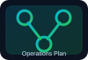
OperationsOperational framework for supporting an Oracle HCM Cloud implementation, including continuity planning, vendor management, compliance standards, and contractual governance.
 Ctf
Ctf
Hands-on CTF and NCL recap write-up with clear disclosure language for any sample or restricted competition data.
Software & game builds
These are intentionally grouped separately from the core cybersecurity and infrastructure projects and include playable technical learning tools.
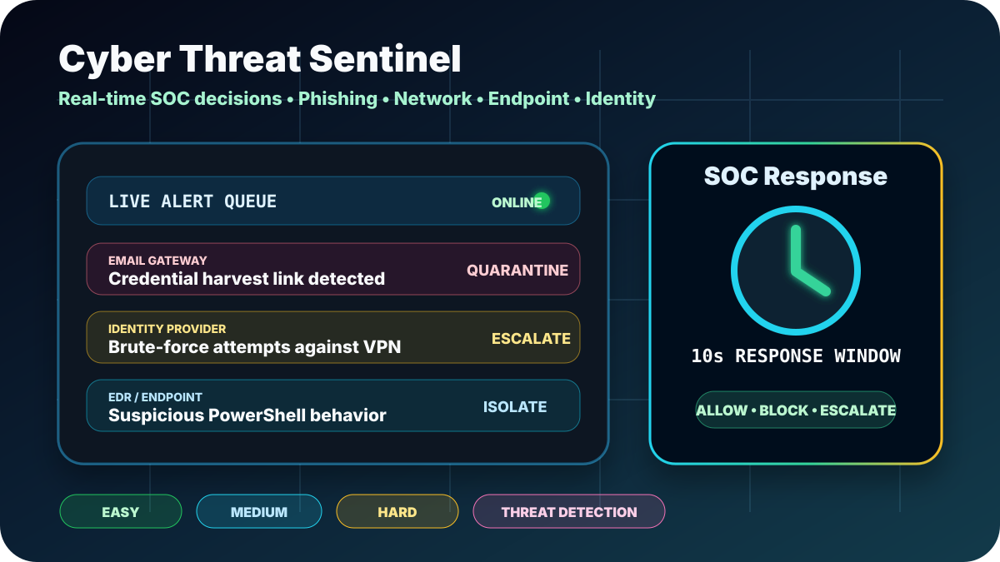
Playable SOC GameReal-time cybersecurity learning game where players analyze simulated phishing, network, endpoint, identity, malware, brute-force, and data exfiltration alerts before choosing the right SOC response.
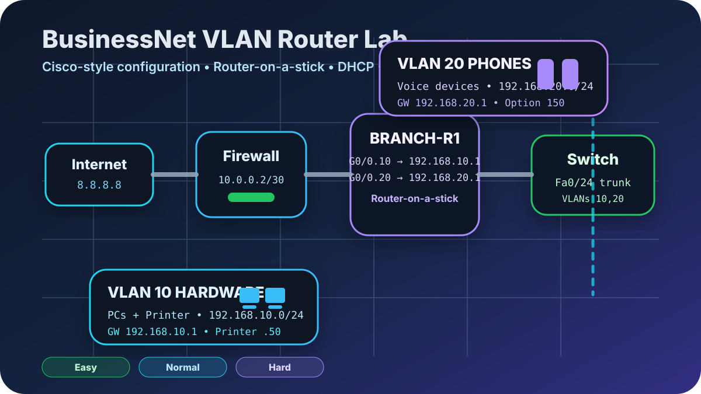
Playable Networking LabWeb-based networking and cybersecurity training game where players configure a five-person business network with hardware and phone VLANs, DHCP, router-on-a-stick subinterfaces, trunk/access ports, NAT, default routing, and firewall concepts.
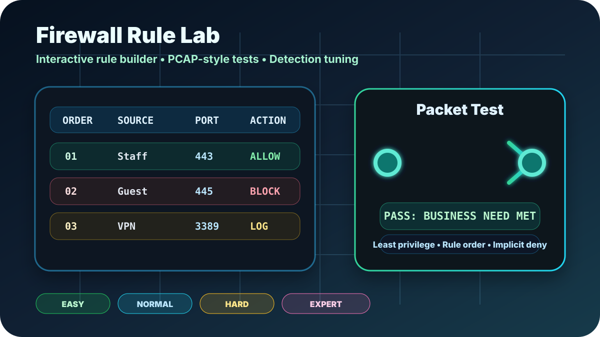
Playable Firewall Rule LabBrowser-based cybersecurity game where players review business needs, build firewall rules, test simulated packets, tune logging and alerts, and learn least privilege, implicit deny, rule order, ACLs, and cloud firewall defaults.
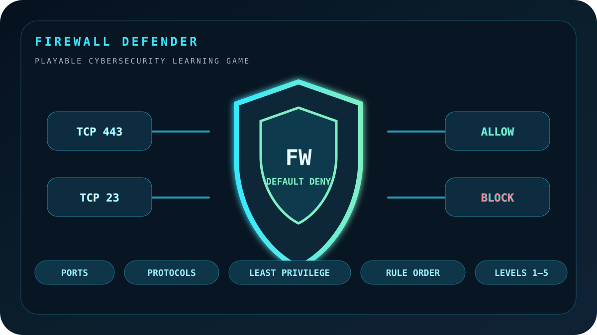
Playable Cybersecurity GameInteractive web-based cybersecurity game that teaches firewall rules through simulated packets, allow/block decisions, ports, protocols, least privilege, risky services, and default-deny policies.
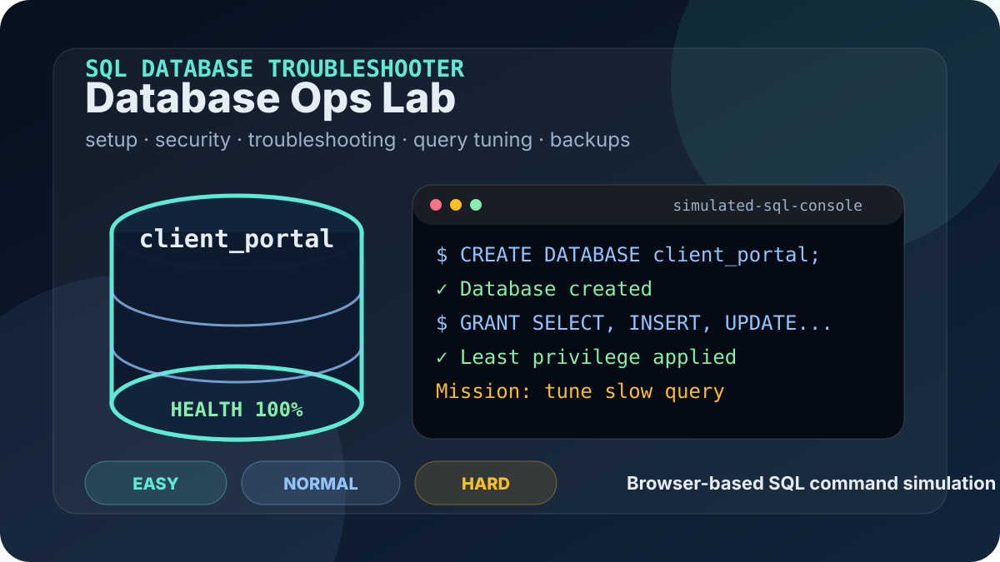
Playable Database Admin GameWeb-based learning game that teaches database setup, user permissions, service outages, query tuning, backups, and integrity checks across Easy, Normal, and Hard modes.
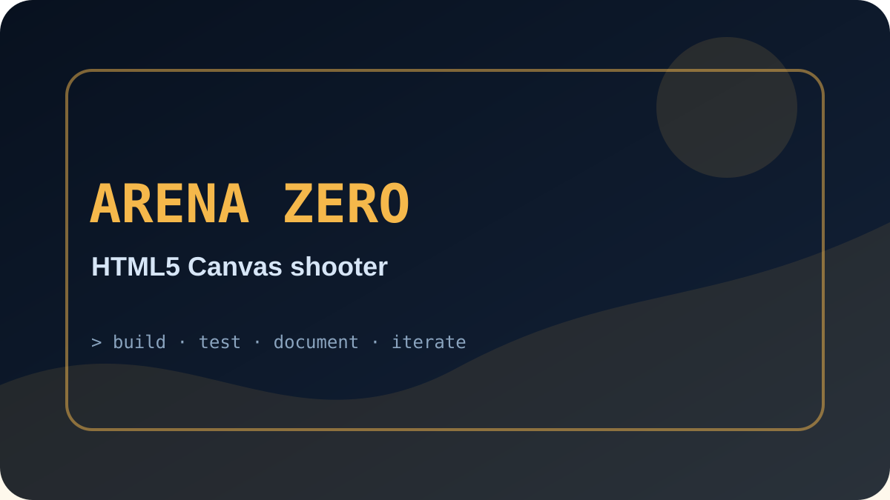
HTML5 Canvas GameStandalone browser-based top-down shooter with weapons, enemy waves, ammo drops, scoring, and no external game libraries.
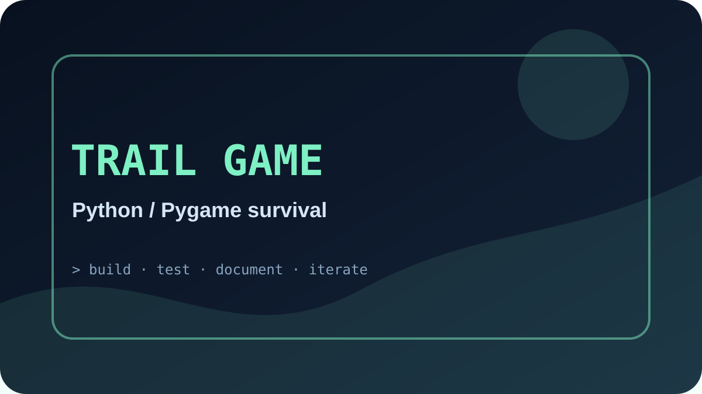
Python / Pygame GameSurvival game with party management, resources, random events, a hunting mini-game, town shop, and JSON save/load.
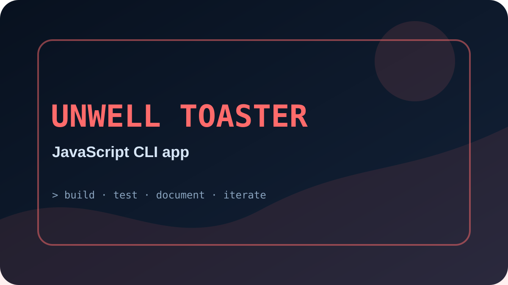
JavaScript CLI ProjectHumorous command-line app with interactive commands, Node.js support, a Windows batch launcher, and a browser version.
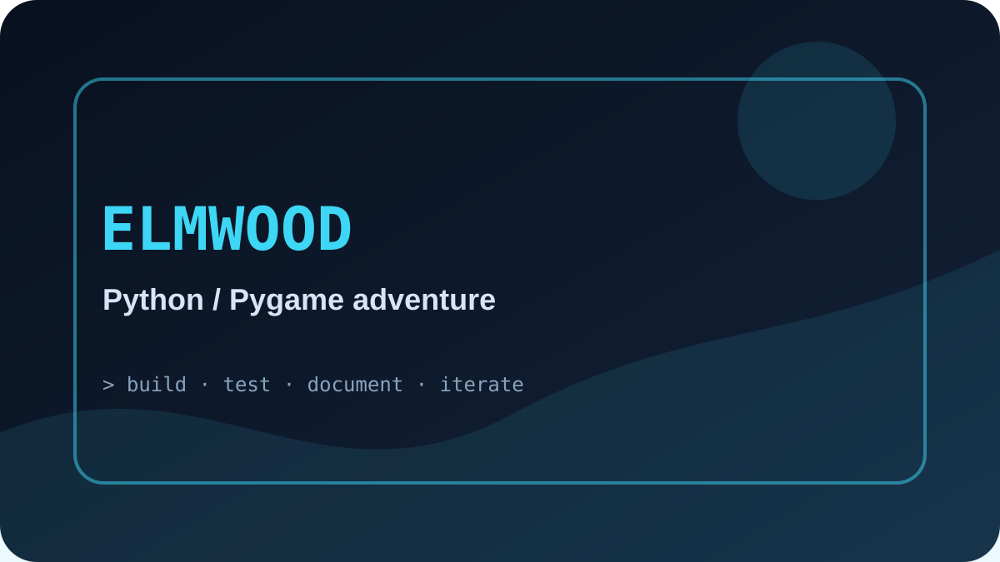
Python / Pygame AdventureZelda-inspired action adventure with overworld exploration, combat, enemy AI, tile maps, NPC interaction, and progression systems.
Music & community tribute projects
These creative web projects are separated from software builds so the library stays easy for hiring managers and visitors to scan.
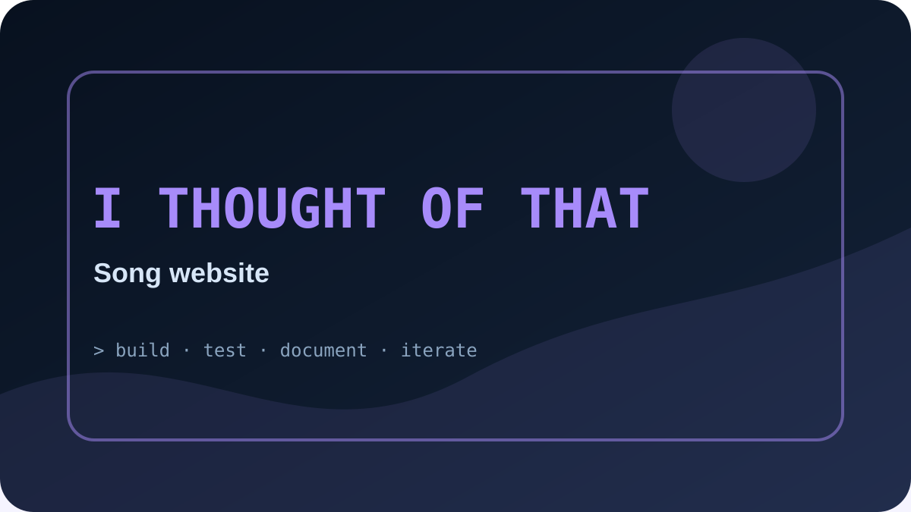
Music Web ProjectGitHub Pages song website with audio, video, lyrics, and a simple static-page structure for sharing a personal creative project.
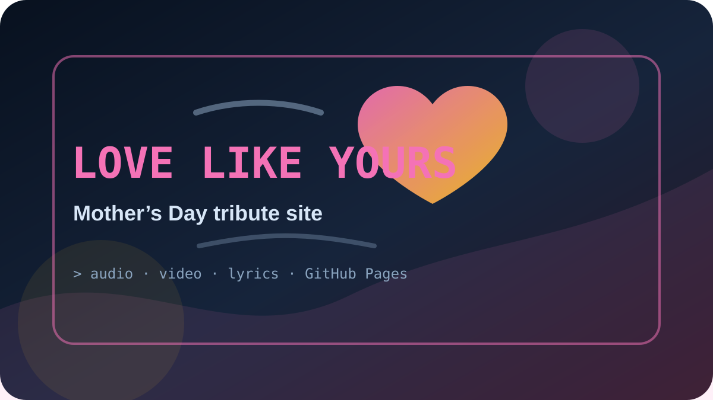
Family Tribute SiteMother’s Day tribute song website with audio, video, lyrics, and a simple GitHub Pages structure for sharing a personal creative project.
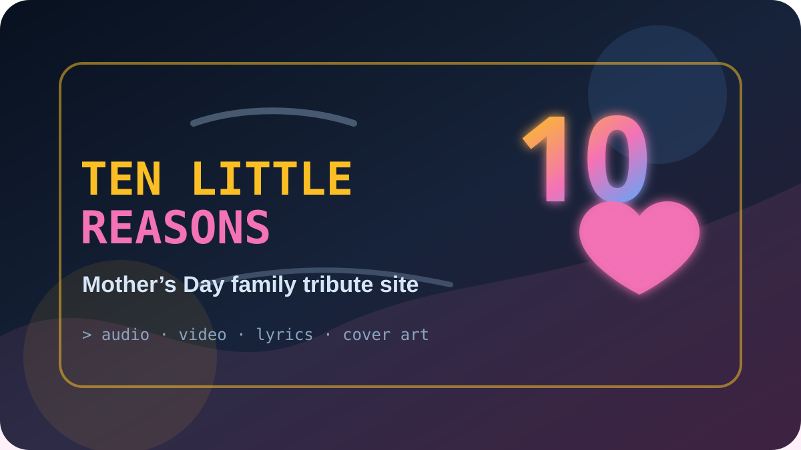
Family Tribute SiteMother’s Day song and video tribute website for the mothers of ten grandchildren, with cover art, lyrics, audio, video, and a GitHub Pages-ready structure.
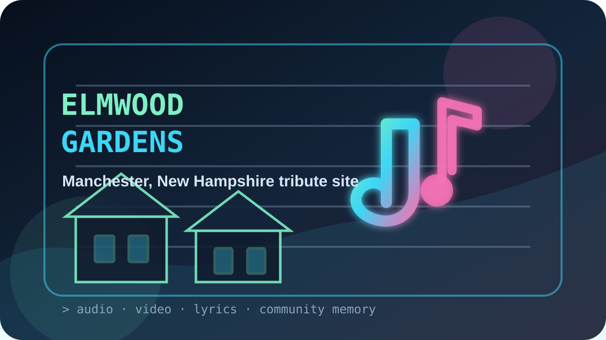
Community Tribute SiteCommunity tribute site celebrating Elmwood Gardens in Manchester, New Hampshire, with album-style artwork, lyrics, audio, video, and GitHub Pages-ready documentation.
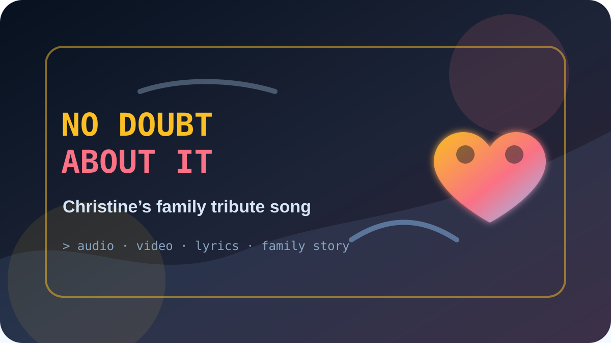
Family Tribute SiteFamily tribute song website honoring Christine Goodwin, blended family love, grandchildren, lyrics, audio, video, and a GitHub Pages-ready presentation.
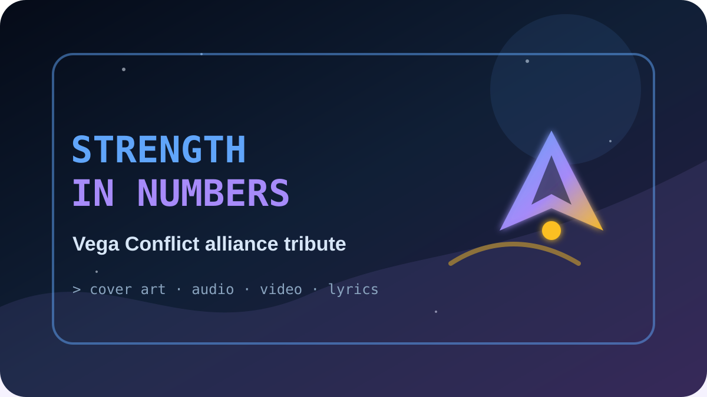
Community Tribute SiteVega Conflict alliance tribute project with cover art, lyrics, audio, video, and a GitHub Pages-ready web page honoring the original leaders.
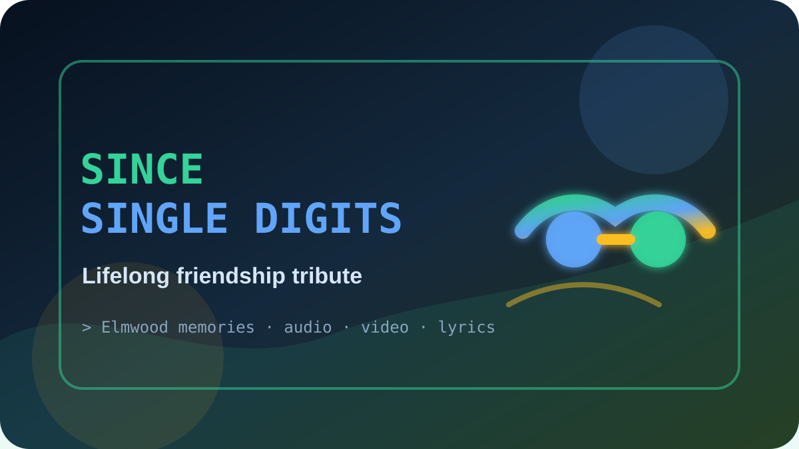
Friendship Tribute SiteFriendship tribute song website dedicated to Nathan Legasse, with cover art, audio, video, lyrics, and a complete GitHub Pages-ready project structure.
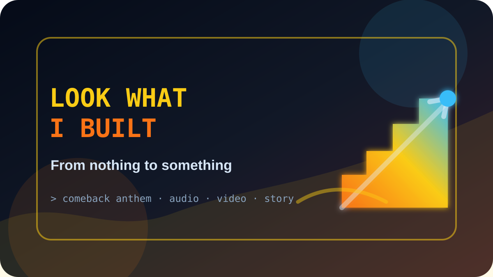
Original Song ProjectOriginal comeback anthem and music release package about rising from hard beginnings, earning an IT degree, pursuing cybersecurity, and building a stronger future.